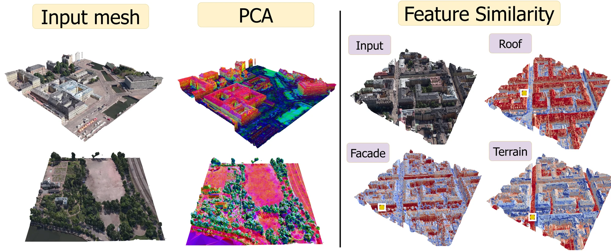
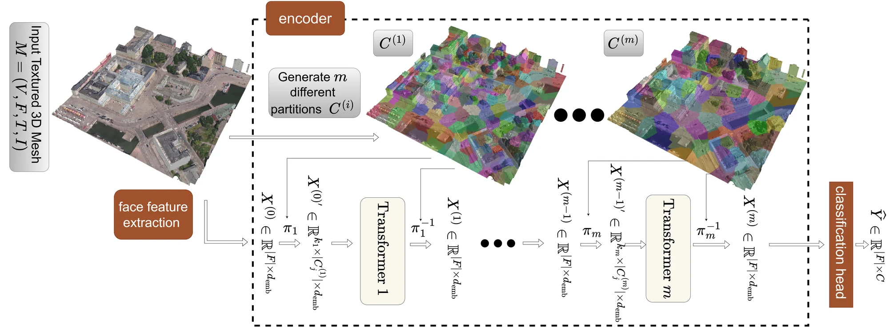
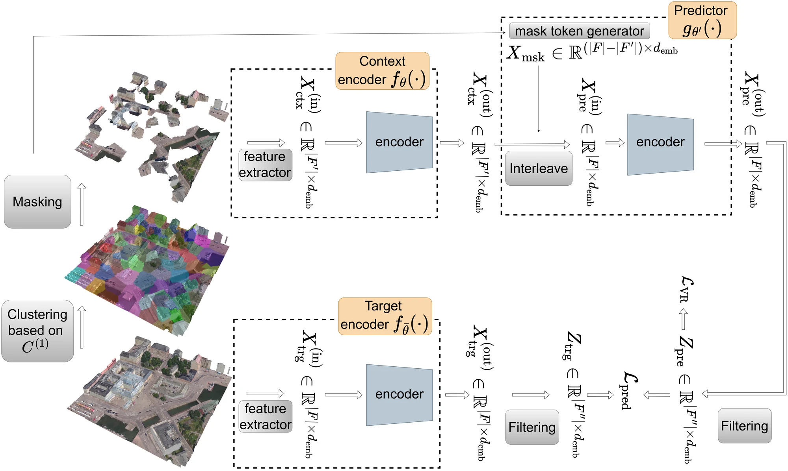
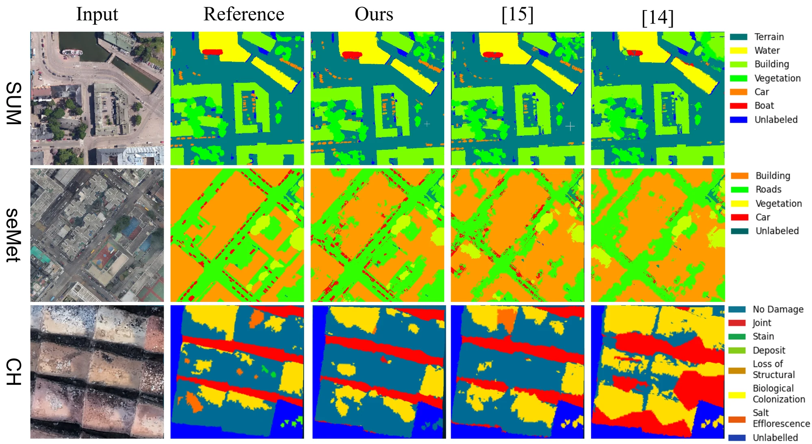

Abstract
The application of deep learning to large-scale 3D textured meshes generated by photogrammetry is hindered by their structural irregularity and the scarcity of dense semantic annotations. We address these limitations by introducing a new architecture for the semantic segmentation of 3D textured meshes and a self-supervised learning framework. Our network uses FlashAttention to process dense per-pixel texture and employs dynamic multi-configuration clustering to facilitate global information exchange while not requiring manifoldness. We also propose MEJA (Mesh Joint-Embedding Predictive Architecture), a self-supervised learning framework for the proposed network based on predicting features for masked mesh clusters, comparing them to features computed for the entire mesh. An evaluation on several datasets demonstrates that our method for semantic segmentation achieves state-of-the-art results with 87.5% and 84.7% mF1 on the SUM and seMet datasets, respectively. Pre-training by MEJA yields consistent performance improvements compared to supervised learning from scratch.
Meaningful embeddings, without any labels

Method
1 · A texture-aware transformer for non-manifold meshes
Each mesh face is represented by a combination of handcrafted geometric features and a learned texture embedding, computed via a single-block transformer over all pixels belonging to that face — made tractable at scale thanks to FlashAttention. Face tokens are grouped into clusters with k-means and processed by a stack of transformer blocks, but unlike prior work that fixes one clustering for the whole network, MEJA generates a new clustering arrangement for every block. Because a face's neighbours in one block are different from its neighbours in the next, information propagates across the entire mesh tile without ever paying for full quadratic attention, and without assuming the mesh is manifold.

2 · MEJA: predicting masked mesh regions in latent space
Inspired by the Joint-Embedding Predictive Architecture (JEPA), MEJA pre-trains the network without any labels. A context encoder sees only a subset of the mesh's face clusters; a target encoder (updated by an exponential moving average of the context encoder) sees the complete mesh. A lightweight predictor is tasked with reconstructing the target encoder's representation of the masked clusters from the context encoder's output alone. Training combines this latent-prediction loss with a variance–covariance regularization term (VICReg) to prevent representation collapse. After pre-training, only the context encoder is kept and fine-tuned — or even linearly probed — on the downstream segmentation task.

Results
State-of-the-art semantic segmentation
Evaluated on two urban-scale benchmarks (SUM, seMet) and a cultural-heritage damage-detection dataset (CH), against mesh-based baselines capable of handling non-manifold geometry.
| Method | SUM | seMet | CH | |||
|---|---|---|---|---|---|---|
| mF1 | OA | mF1 | OA | mF1 | OA | |
| RF‑MRF | 68.1 | 91.2 | 47.8 | 83.4 | – | – |
| SUM‑RF | 73.8 | 93.0 | 81.1 | 95.3 | – | – |
| PSSNet | 83.8 | 94.1 | 82.3 | 96.0 | – | – |
| DiffusionNet | 60.1 | 80.4 | 63.8 | 25.9 | 25.9 | 63.8 |
| NoMeFormer | 66.6 | 84.3 | 67.9 | 34.1 | 34.1 | 67.9 |
| Semantic Seg. of Textured Non-Manifold Meshes | 81.9 | 94.3 | 80.1 | 93.8 | 49.7 | 72.8 |
| UrbanSegNet | 86.9 | 93.9 | 84.4 | 95.9 | – | – |
| Ours | 87.5 | 94.5 | 84.7 | 96.0 | 54.6 | 74.5 |
mF1 / OA in %. Baseline numbers as reported by the UrbanSegNet benchmark protocol.
Qualitative comparison

Self-supervised pre-training accelerates and improves learning
We pre-train MEJA on 108M unlabelled faces (SUM + seMet + a curated subset of the Helsinki 3D City Model) and evaluate under linear probing (LP), 10%-data few-shot fine-tuning (FS), and full fine-tuning (FF).
| Method | Setting | Params | Data | SUM | seMet | CH |
|---|---|---|---|---|---|---|
| Training from scratch | LP | <1% | 100% | 14.1 | 12.0 | 19.3 |
| FS | 100% | 10% | 46.4 | 21.1 | 40.9 | |
| FF | 100% | 100% | 87.5 | 84.7 | 54.6 | |
| MEJA | LP | <1% | 100% | 59.4 | 54.1 | 30.2 |
| FS | 100% | 10% | 61.7 | 39.6 | 41.3 | |
| FF | 100% | 100% | 88.7 | 85.2 | 54.8 |
mF1 [%]. LP: linear probing · FS: few-shot (10% labels) · FF: full fine-tuning.
BibTeX
@inproceedings{heidarianbaei2026meja,
title = {{MEJA}: A Self-Supervised Joint-Embedding Predictive Architecture for {3D} Mesh Semantic Segmentation},
author = {Heidarianbaei, Mohammadreza and Mehltretter, Max and Rottensteiner, Franz},
booktitle = {British Machine Vision Conference (BMVC)},
year = {2026}
}